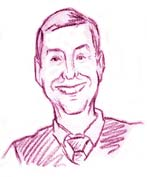

This is an archived copy of History Matters, provided by the Roy Rosenzweig Center for History and New Media. To explore this content in a new interface, visit Who Built America?.


Charles Errico received his Ph.D. in American diplomatic history from the University of Maryland. He is the assistant dean and professor of history at the Woodbridge Campus of Northern Virginia Community College. He also teaches in the graduate history program at George Mason University. Over the last twenty years, Dr. Errico has won teaching awards from the Educational Foundation, the Alumni Association, and the Carnegie Institute. He most recently co-edited a popular American history readings book, Portrait of America, that was published by Houghton-Mifflin in 2003.1. When did you start teaching?
I started teaching when I was in graduate school at the University of Maryland in the 1970s. I was a teaching assistant during both my M.A. and Ph.D. programs and it was a turning point in my life. I realized that I could combine my love for history and teaching into a career as a college teacher.
Unfortunately, the job market was tight then as it is now. Near the end of my Ph.D. program, I started teaching in the University of Marylands University College, Prince Georges Community College, and Northern Virginia Community College. The teaching experience was valuable and helped me obtain a job when Northern Virginia Community College opened a new campus in Woodbridge. Since then, I have become an assistant dean and have a job that combines teaching with administrative functions (hiring, evaluations, dealing with student complaints).
I love community college teaching because it brings me into close contact with students, many with only the most basic skills and most who enter a history class only because it is a required course. My goal is to help them obtain the skills to achieve a college degree and to instill in them a love for history that will last long after they leave my classroom.
2. What courses have you taught?
Most of the courses that I have taught at the community college are the American surveys. I have also enjoyed developing special graduate courses and seminars for teachers in Fairfax, Prince William, and Spotsylvania counties in Virginia. The teachers are a joy to have in the classroom because they are dedicated to their profession and to helping their students appreciate history. I teach these courses in a different manner from other graduate courses. In addition to helping teachers understand new historical interpretations, I try to help them with teaching strategies and we develop model lesson plans to share with each other.
In addition, for the past ten years, I have taught in the history graduate program at George Mason University (GMU). This has been a great experience because it forced me to keep up with my discipline and teach in my special field. At GMU, I have taught diplomatic history, 20th century history, the study and writing of history, and a number of other courses.
3. What are the biggest themes that you try to convey in the U.S. history survey?
I think that many students are turned off to history because they associate it with names and dates that have no meaning to their personal lives. Good history is a good story and I focus on people, both those who have led the country and those who toiled with their everyday lives. This means for me a heavy focus on social, cultural, and ethnic history. The first half of the American survey has a heavy focus on slavery. I use as a basic text a book that Stephen Oates and I recently edited, Portrait of America, that includes essays on immigration patterns, childbirth, and family life. There are strong biographical readings and lectures on Washington, Jefferson, Jackson, Lincoln, Douglass, Tubman and others, but I try to help students picture them as humans with great achievements and flaws. In other words, they are like usthe professor and the studentswho sometimes gets things right, but many times fail. This approach makes these important women and men more accessible and identifiable.
4. What are your most important goals in teaching the survey course?
My major goal in teaching the survey course is to inspire students to continue to study and see the importance in history. This may simply mean that they will occasionally watch a PBS special or the History Channel. Perhaps some will even buy a book by popular history writers such as David McCullough or Doris Kearns Goodwin. If I am enthusiastic about my discipline, I find that others will be too.
5. What are the most effective assignments that you use in the US history survey course?
When I first started teaching, I lectured far too much. The lessons that failed to achieve my goals were usually ones where I was doing most of the talking. In each class, I try to engage the students by asking them questions. I also try to incorporate several different teaching strategies that may include maps, documents, short films, and short lectures. My students have grown up in a visual age and the best lessons involve power point, slides, overheads, and other visual images that they can view while we discuss history.
I have had success in using primary source documents in the classroom. In particular, I like using a series of documents that consist of eyewitness accounts of the first shot fired at Lexington. The British and Americans present give greatly different versions and I try to make it clear that although historians rely on primary sources, the prejudices and emotions in these documents need to be taken into consideration. I follow this assignment with a paragraph or two from British and American textbooks on the events that started the American Revolution to show that the prejudices and emotions of professional historians also determine the type of history that we read.
6. What is your most memorable teaching experience?
Teaching is wonderful for the ego because good lessons usually produce good feedback. I have grown close to many of my students. Over the course of several semesters, I taught the husband, wife, and three children from the same family. I remember one graduation ceremony in particular when four members of the family all received degrees. They all felt a great sense of accomplishment and made me feel like I was an important member of their family. I have also taught some wonderful graduate students at GMU and then had the pleasure of hiring them to teach at the community college after they received their degree. They have all proved to be fantastic teachers.
7. How has teaching changed over your career? How have your experiences shaped your teaching?
History teachers have more tools to help their students than when I first started. Power point, the Internet, and email have all worked well for my students and allow us to better communicate outside of class. But technology will never replace the personal interaction that takes place in the classroom. I have taught distance learning and enjoy it, but never as much as the give and take creative thinking that takes place when people are together in the classroom.
I have never developed an online course, but I did develop a telecourse (another form of distance learning) on American History since 1945. It was one of my most enjoyable academic projects. I wrote more than 100 letters to the history makers of that period and asked them for interviews that would be videotaped and edited into the series. I was amazed at who respondedWilliam Westmoreland, Jeanne Kirkpatrick, Betty Friedan, Julian Bond, George McGovern, Eugene McCarthy, Pat Buchanan, John Lewis, and dozens more. The lectures for the telecourse were taped at remote locationsdiscussing the death of JFK from his grave at Arlington Cemetery, Watergate from the Senate Caucus Room, and civil rights from the steps of the Lincoln Memorial. I also used music, film clips, and photographs that I collected from the Library of Congress and National Archives—it was really a poor man’s PBS series. It still appears on cable television and is remains popular with students. Universities in Pennsylvania, New York, and Massachusetts have bought rights to the series (26 one-half hour programs).
8. What tips would you give to a new history teacher?
I find that a certain percentage of my students will do well no matter who the instructor happens to be. Unfortunately, a few will fail to matter how skilled the instructor is. But for the great majority, especially in the community college, you will and can make a difference in their lives. Helping them with their writing skills and simply showing that you care about them can many times keep them in college and, ultimately, help them obtain a degree. More importantly, it can help them gain confidence in themselves that perhaps they need because of problems at home or on the job. And, if you are lucky, and maintain your enthusiasm for history and teaching, you can inspire your students to love your discipline and keep learning and growing after they have received their degree.
Interview conducted by Kelly Schrum; completed in November 2002.